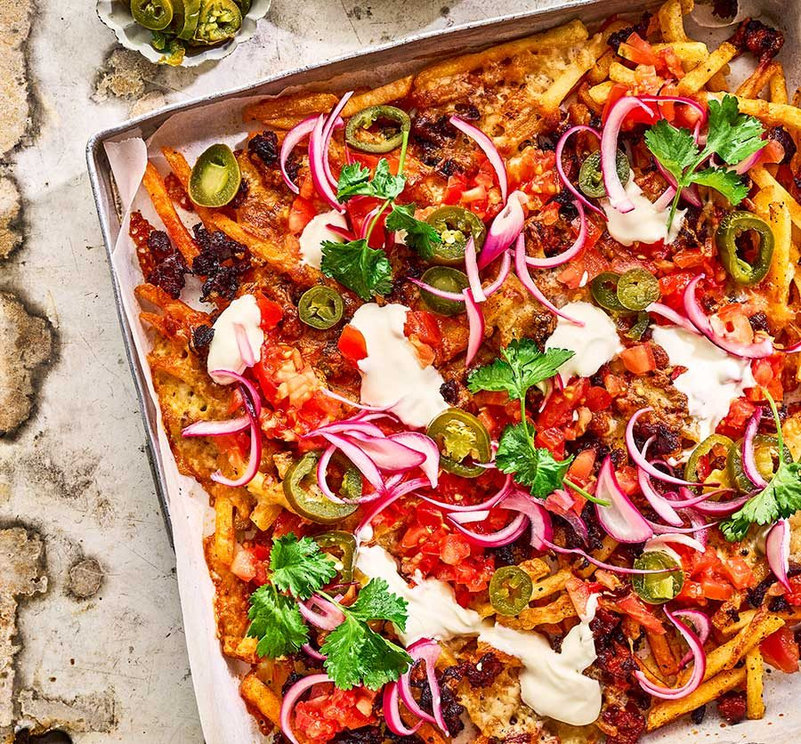

Loaded Fries Recipe

Description
Enjoy fries loaded with tomatoes, soured cream, jalapeños and pickled red onions – perfect for movie nights or entertaining, they'll be a big hit with any crowd
Ingredients
- 1 red onion, halved and finely sliced
- 1/2 lime, juiced
- 450g frozen oven fries
- 2 tsp Cajun seasoning, plus a pinch
- 6 pork or chorizo-style sausages
- 150g mixed grated cheddar and mozzarella cheese
Steps
- Combine the sliced onion, lime juice and a pinch of salt in a non-metallic bowl, and set aside to lightly pickle for 20 mins. Will keep chilled for up to five days.
- Heat the oven to 200C/180C fan/gas 6. Arrange the fries in a single layer over a large baking tray, sprinkle with a generous pinch of the Cajun seasoning and bake for 10 mins, shaking the tray after 5 mins. They should be cooked but not have much colour.
- Meanwhile, squeeze the sausagemeat from the skins into a frying pan, and add the 2 tsp Cajun seasoning. Fry over a medium heat, breaking the meat up with a wooden spoon, until cooked and browned in places.
- Remove the fries from the oven, then scatter over the cooked sausage and cheese. Return to the oven for 10 mins until the cheese has melted and the chips are golden and crisp.
- Top the hot fries with the tomatoes, soured cream, jalapeños, pickled onions and coriander leaves just before serving.